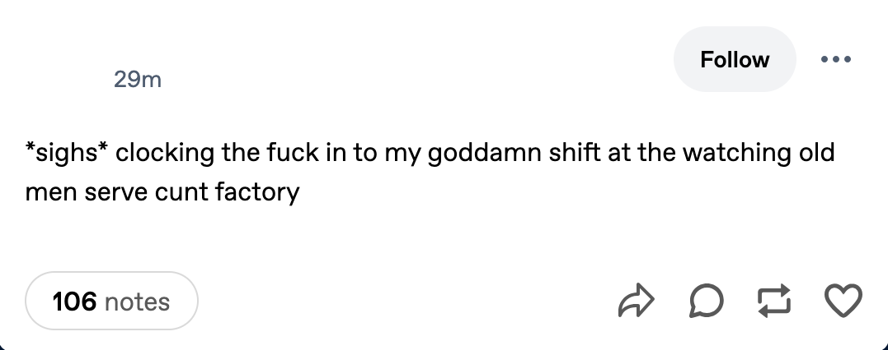
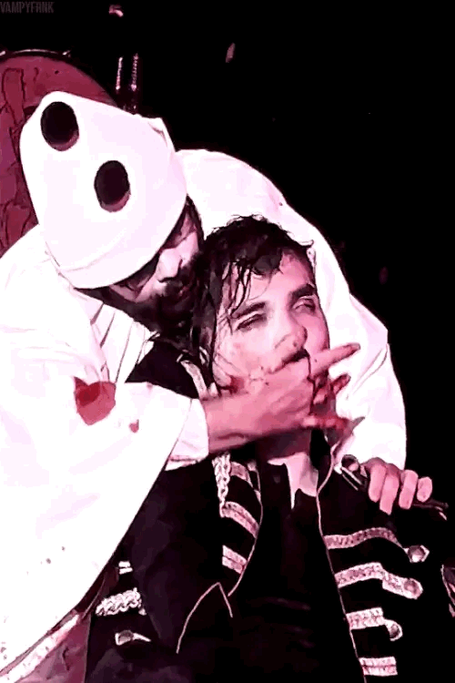
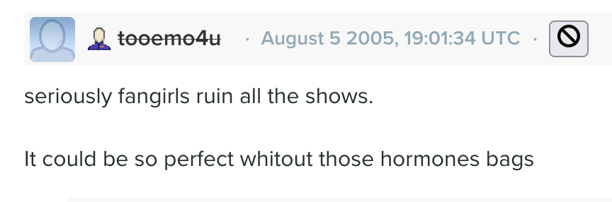
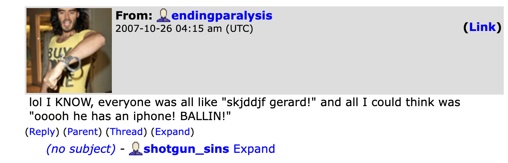
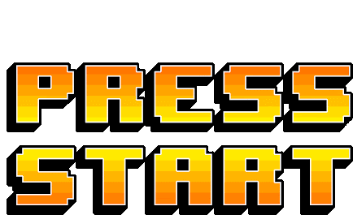
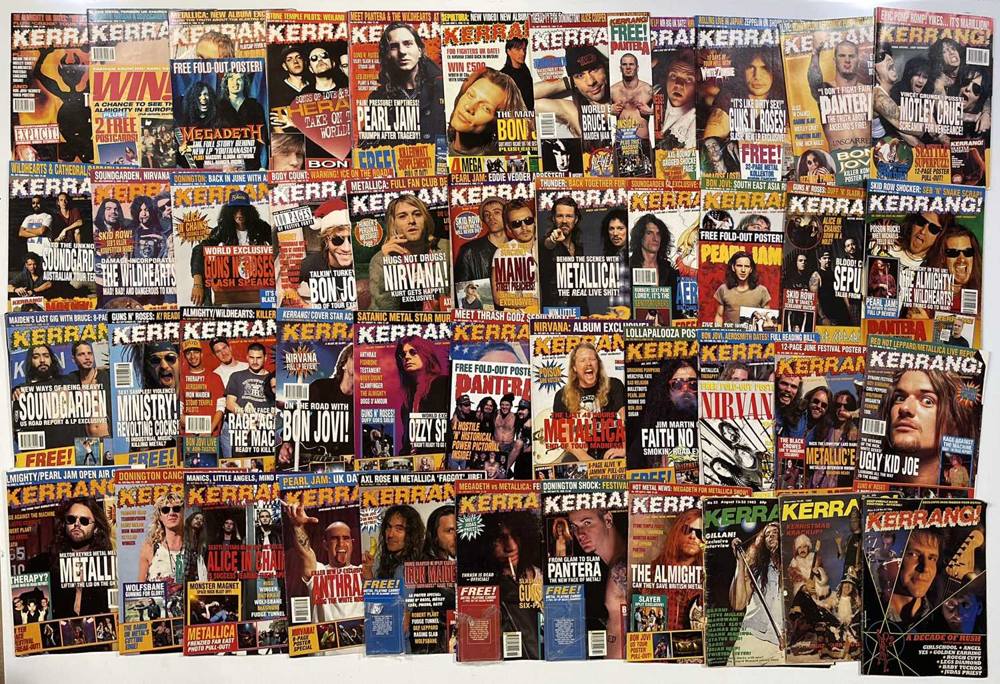
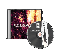

AUDIO GUIDE


click here to crank it to gore





"When fans start to write they don’t hold back. Fan writing drips with desire, crossing boundaries, refusing categories. In the 1985 cult classic Starlust, an early collection of fan letters, confessions, diaries and interviews, mostly female fans – from love-struck teenagers obsessed with Nick Hayward to middle-aged Barry Manilow fans held in the grip of “Manilust” – recount (often aggressively sexual) fantasies about male rock star idols. The book feels hot and too much; the reader is both turned on and cringing. It is a similar experience to reading Chris Kraus’ I Love Dick, in which she recounts in painstaking and sometimes painful detail her obsession with a prominent academic; a fixation that manifests as a series of letters, written mostly herself and sometimes by her husband Sylvère Lotringer as an attempt – similar to the missives contained in Starlust – to unlock the creative potential of her crazed and paralysing infatuation. For Kraus, in I Love Dick, creativity and scholarly engagement are always intimately entwined with this specific form of fannish love. In one section from the book that is all about authorship and desire, she describes meeting up with a friend to discuss books and poems that feature their shared interest in 'mysticism, love, obsession. Our conversations are not so much about the theories of love and desire, as its manifestations in our favourite books and poems. Study as a Fan Club meeting – the only kind.'"
From Fandom As Methodology By Catherine Grant and Kate Random Love



X
These are from the Australia leg of Swarm Tour in March 2023. These shows happened from 2am-6am for a week and I watched every single one via shitty Instagram livestreams even though I had a full time job. I'm pretty sure waking up from deep REM sleep at like 3am to fry my retinas with a live Gerard Way upskirt feed for six days straight left me with permanent brain damage. I felt so connected to not only the 2k people in the livestream with me and the 15k people at the show on the other side of the world, but also to all the fans throughout the history of music fandom who would have committed real, honest to God crimes to experience a nightly livestream pointed straight up their favorite musician's skirt. During MCR's orignal run in the 2000s, fans used their blogs to share shows with each other. LiveJournal is (still) littered with posts from young fans who would get home the night after their show and word vomit every single detail they remembered from the night in the most scattered, unedited form of reporting you can imagine. These posts certainly "drip with desire" (in Catherine Grant and Kate Random Love's words) in some ways, but my contemporary eyes and heart can feel how they're also held back by rock fandom sensibilities of the time. Even on the distinctly feminine LiveJournal platform, I find young women policing their words, their tone, their expressions. They report in a cool tone that "mcr totally kicked a$$ last night" and "played some of the old stuff". God forbid anyone get too excited.


Of course, I understand their impulse. I understand it deeply and intimately. When I was a teenager, I felt bad going to rock shows, because I felt like my presence in the pit as a teen girl hurt my favorite band's credibility. And I didn't want to hurt them. I loved them. But I couldn't show that to anyone--at least no one that I didn't trust. My touch contaminated anything I got close to with teen fangirl cooties. When people questioned me about liking what were essentially not-like-other-girl boybands I defensively exclaimed It's about the music, not how hot they are. That was what everyone else said. That was what real rock dudes said (or so the girls around me said). Then I grew up to be a twenty seven year old lesbian who gets faint at the sight of Gerard Way in a miniskirt. Somewhere along the way calling Gerard hot in a girl way started to feel empowering. It felt defiant. I'm not sure exactly when it flipped.
CLOSE



AUDIO GUIDE
click here to crank it to gore
